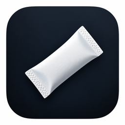
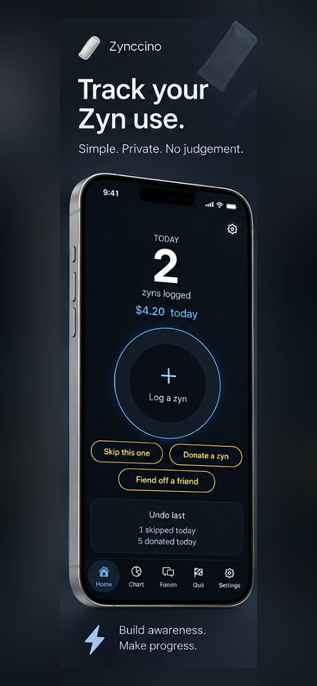
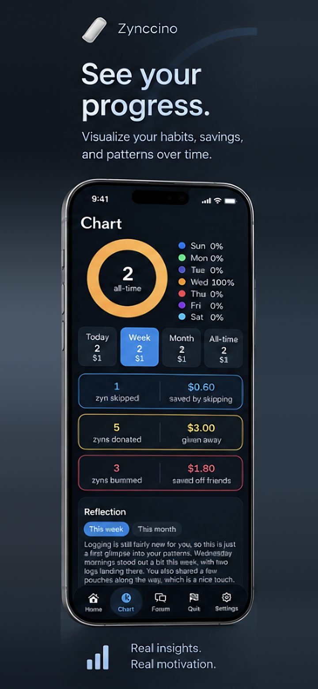
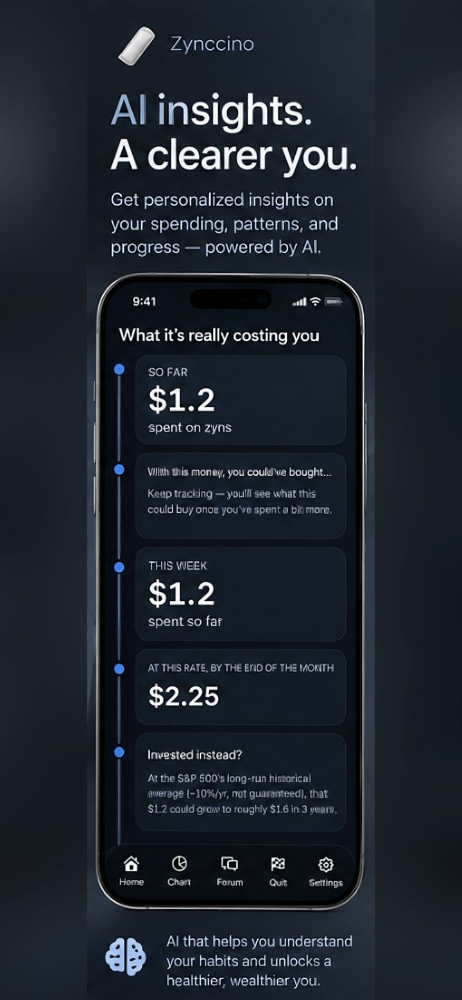
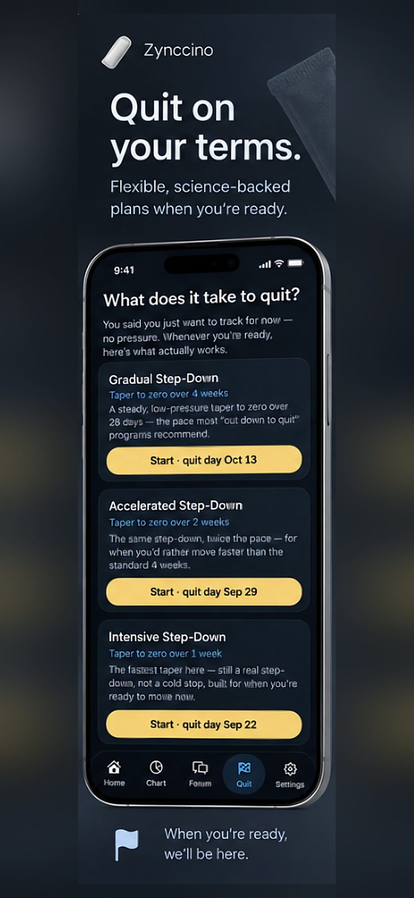
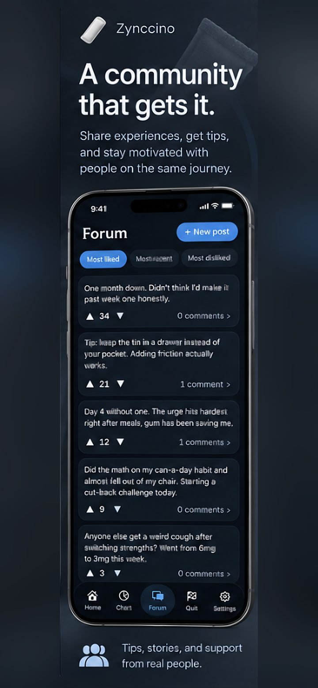

ZynccinoA private tracker for nicotine pouch use — see what it's costing you, spot your patterns, and quit at your own pace when you're ready.

One tap to log, skip, or share a pouch — with today's count and spend right up front. Simple, private, no judgment.

Visualize your habits, savings, and patterns over time — including a written reflection on what's actually changed.

See what your spend really adds up to — and what it could be worth if it went somewhere else instead.

Flexible step-down plans for whenever you're ready — gradual, accelerated, or intensive. No pressure until you choose one.

A space for tips and notes from your own tracking history, right alongside everything else.